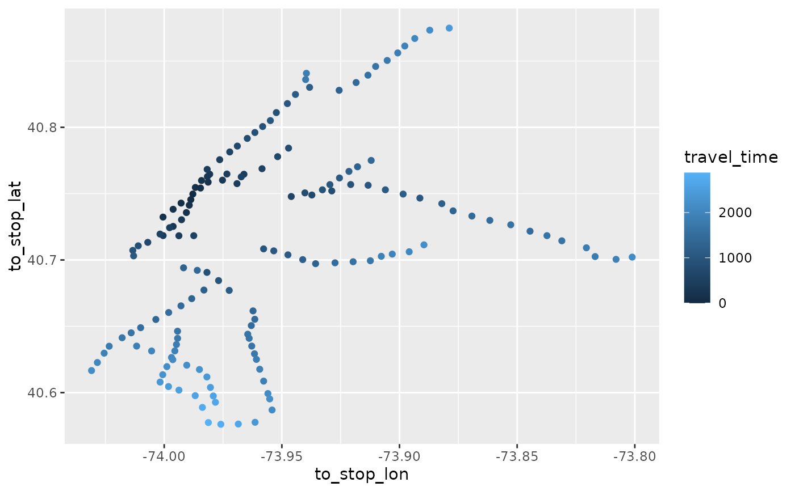

Calculate shortest travel times from a stop to all reachable stops
Source:R/travel_times.R
travel_times.RdFunction to calculate the shortest travel times from a stop (given by stop_name)
to all other stop_names of a feed. filtered_stop_times needs to be created before with
filter_stop_times() or filter_feed_by_date().
Usage
travel_times(
filtered_stop_times,
stop_name,
time_range = 3600,
arrival = FALSE,
max_transfers = NULL,
return_coords = FALSE,
return_DT = FALSE,
stop_dist_check = 300,
...
)Arguments
- filtered_stop_times
stop_times data.table (with transfers and stops tables as attributes) created with
filter_stop_times()where the departure or arrival time has been set.- stop_name
Stop name for which travel times should be calculated. A vector with multiple names can be used.
- time_range
Either a range in seconds or a vector containing the minimal and maximal departure time (i.e. earliest and latest possible journey departure time) as seconds or "HH:MM:SS" character. If
arrivalis TRUE,time_rangedescribes the time window when journeys should end atstop_name.- arrival
If
FALSE(default), all journeys start fromstop_name. IfTRUE, all journeys end atstop_name.- max_transfers
The maximum number of transfers. No limit if
NULL- return_coords
Returns stop coordinates (lon/lat) as columns if
TRUE. Default isFALSE.- return_DT
travel_times() returns a data.table if
TRUE. Default isFALSEwhich returns atibble/tbl_df.- stop_dist_check
stop_names are not structured identifiers like stop_ids or parent_stations, so it is possible that stops with the same name are far apart from each other. travel_times() errors if the distance among stop_ids with the same name is above this threshold (in meters). Use
FALSEto turn check off. However, it is recommended to either useraptor()or fix the feed (seecluster_stops()) in case of warnings.- ...
ignored
Value
A table with travel times to/from all stops reachable by stop_name and their
corresponding journey departure and arrival times.
Details
This function allows easier access to raptor() by using stop names instead of ids and
returning shortest travel times by default.
Note however that stop_name might not be a suitable identifier for a feed. It is possible
that multiple stops have the same name while not being related or geographically close to
each other. stop_group_distances() and cluster_stops() can help identify and fix
issues with stop_names.
Examples
# \donttest{
library(dplyr)
# 1) Calculate travel times from two closely related stops
# The example dataset gtfs_duke has missing times (allowed in gtfs) which is
# why we run interpolate_stop_times beforehand
gtfs = interpolate_stop_times(gtfs_duke)
tts1 = gtfs %>%
filter_feed_by_date("2019-08-26") %>%
travel_times(c("Campus Dr at Arts Annex (WB)", "Campus Dr at Arts Annex (EB)"),
time_range = c("14:00:00", "15:30:00"))
# you can use either filter_feed_by_date or filter_stop_times to prepare the feed
# the result is the same
tts2 = gtfs %>%
filter_stop_times("2019-08-26", "14:00:00") %>%
travel_times(c("Campus Dr at Arts Annex (WB)", "Campus Dr at Arts Annex (EB)"),
time_range = 1.5*3600) # 1.5h after 14:00
all(tts1 == tts2)
#> [1] TRUE
# It's recommended to store the filtered feed, since it can be time consuming to
# run it for every travel time calculation, see the next example steps
# 2) separate filtering and travel time calculation for a more granular analysis
# stop_names in this feed are not restricted to an area, create clusters of stops to fix
nyc_path <- system.file("extdata", "nyc_subway.zip", package = "tidytransit")
nyc <- read_gtfs(nyc_path)
nyc <- cluster_stops(nyc, group_col = "stop_name", cluster_colname = "stop_name")
# Use journeys departing after 7 AM with arrival time before 9 AM on 26th June
stop_times <- filter_stop_times(nyc, "2018-06-26", 7*3600, 9*3600)
# Calculate travel times from "34 St - Herald Sq"
tts <- travel_times(stop_times, "34 St - Herald Sq", return_coords = TRUE)
# only keep journeys under one hour for plotting
tts <- tts %>% filter(travel_time <= 3600)
# travel time to Queensboro Plaza is 810 seconds, 13:30 minutes
tts %>%
filter(to_stop_name == "Queensboro Plaza") %>%
mutate(travel_time = hms::hms(travel_time))
#> # A tibble: 1 × 12
#> from_stop_name to_stop_name travel_time journey_departure_time
#> <chr> <chr> <time> <time>
#> 1 34 St - Herald Sq Queensboro Plaza 13'30" 07:42:30
#> # ℹ 8 more variables: journey_arrival_time <time>, transfers <int>,
#> # from_stop_id <chr>, to_stop_id <chr>, from_stop_lon <dbl>,
#> # from_stop_lat <dbl>, to_stop_lon <dbl>, to_stop_lat <dbl>
# plot a simple map showing travel times to all reachable stops
# this can be expanded to isochron maps
library(ggplot2)
ggplot(tts) + geom_point(aes(x=to_stop_lon, y=to_stop_lat, color = travel_time))

# }